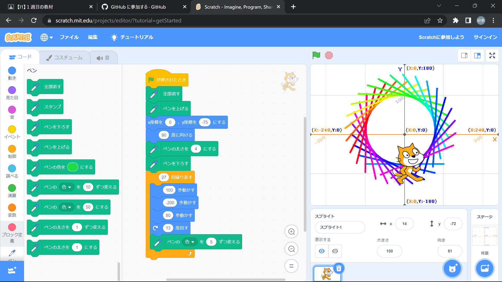
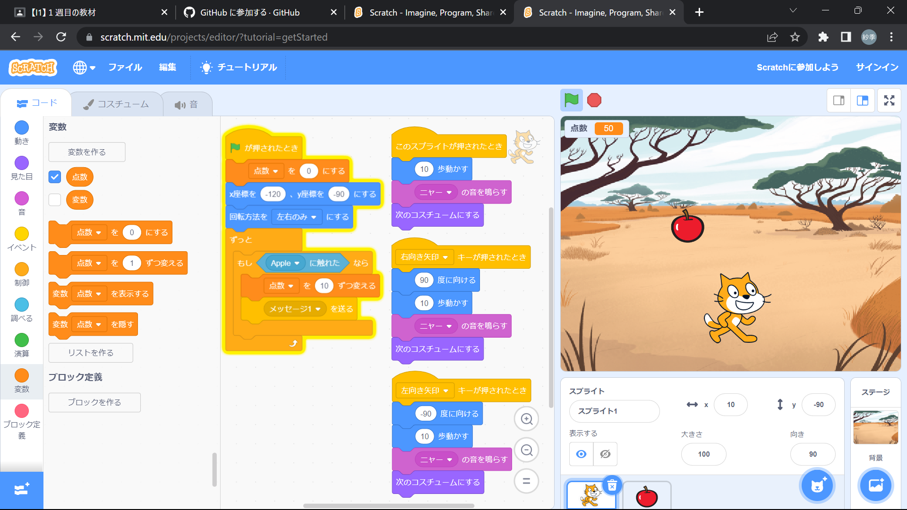

1週目のレポート ： 公大高専１年実習I-1
3a班12番 河田紗季
第1週目
1-1 サイエンスアート

1.内容
スクラッチを使って線を書くプログラムを作成した。 歩数や角度、色の変化の値などを変えることで様々な図形を書くことができる。 ペンを下げていないと書くことができない。 初めの色を指定していないと書き直す度に色が変わる。
2.感想
色の変化がとてもきれいだった。 数字の値を変えて色々な図形を作るのも楽しかった。 自分で値を考えてきれいな虹色の円を作れた時は嬉しかった。 円の周りがかくかくしていたり、色がずれたりしていたので もっと試行錯誤してよりきれいに作りたいと思った。
1-2 ゲーム

1.内容
リンゴがランダムで降ってきて、猫がリンゴに触れると点数が10増えるゲームのプログラムを作成した。 猫に触れたリンゴは消えるようになっている。 乱数を使うことでランダムな速さや位置に降るようになっている。
2.感想
降ってくる速さやリンゴの個数を変えることでもっと難しいゲームを作れそうだと思った。 追尾したりするプログラムも作ったことがあるので猫に自動でリンゴを追尾させたりもできそうだと思った。
1-3 ホームページ作成
私のホームページ
1.内容
自分の説明とクラブと趣味を書いたホームページを作成した。
2.感想
初めてホームページを作ったので、文字を入れただけでも達成感があって楽しかった。 今までホームページは限られた人しか作れないと思っていたから、学生でも作って世界に公開できると知って驚いた。 簡単に情報を公開できることは便利だけど少し怖いなと思った。